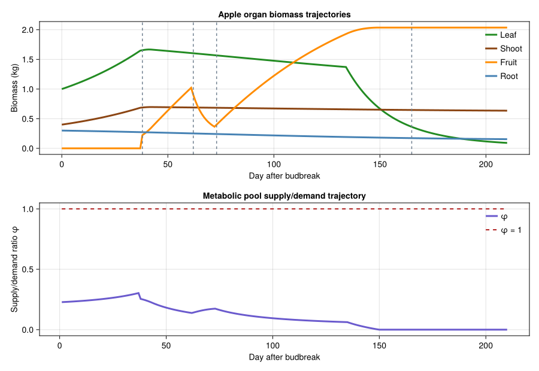

Golden Delicious Apple Tree Growth Model
PhysiologicallyBasedDemographicModels.jl
- Introduction
- Model Structure
- Parameters
- Weather Data: Wädenswil, Switzerland
- Implementation
- Results
- Analysis
- Discussion
Primary reference: (Baumgärtner et al. 1986).
Introduction
This vignette implements a physiologically based demographic model (PBDM) for the growth and development of Golden Delicious apple trees (Malus domestica Borkh.), following the approach of Baumgärtner, Graf, Zahner, Genini, and Gutierrez (1986). Apple trees present a distinctive PBDM challenge because they are perennial crops: a permanent woody frame persists across seasons, supporting annually renewed populations of organs — leaves, shoots, fruit, and fine roots.
The model treats an individual tree as a perennial frame upon which four organ populations develop each growing season. Growth and development are driven by temperature-dependent physiological time (degree-days above a base threshold), and carbon allocation follows the standard metabolic-pool / supply–demand framework of Gutierrez and coworkers.
Phenological stages
Apple phenology in a temperate climate follows a well-defined annual cycle:
- Dormancy (winter): chilling accumulation required to break endodormancy.
- Bud break (spring): reserves in the frame fuel initial leaf and shoot growth.
- Bloom (~350–400 DD above 4.4 °C): flowers open; fruit set begins.
- June drop (~600–800 DD): excess fruit shed when supply/demand ratio is low.
- Fruit enlargement (summer): fruit has the highest priority for assimilates.
- Harvest (~121 calendar days after T-stage; ~2200 DD).
- Leaf fall and reserve storage (autumn): carbohydrates translocated to frame.
Reference: Baumgärtner, J., Graf, B., Zahner, Ph., Genini, M., and Gutierrez, A.P. (1986). Generalizing a population model for simulating Golden Delicious apple tree growth and development. Acta Horticulturae 184: 111–122.
Model Structure
Distributed delay for organ cohorts
Each organ population is modelled as a distributed delay (Manetsch,
- with
ksubstages. The delay durationτrepresents the
physiological age (in degree-days) at which an organ cohort exits the population — through senescence for leaves, lignification for shoots, harvest for fruit, or turnover for roots. The k parameter controls the variance of transit times; higher k gives more deterministic (synchronous) development.
| Organ | τ (DD) | Role in model |
|---|---|---|
| Leaves | 700 | Photosynthetic source; age structure matters for mite dynamics |
| Shoots | 1200 | Structural growth; exiting shoots become frame |
| Fruit | 1100 | Highest priority sink; subject to shedding |
| Roots | 200 | Fine root turnover; exiting roots join frame |
Dormancy and chilling
Deciduous apple trees require a period of chilling (temperatures between 0–7 °C) before buds can break in spring. The classic estimate for Golden Delicious is approximately 1000–1400 chill hours (Richardson et al., 1974). In the model we represent this as a simple chill-hour accumulator: development cannot begin until the chilling requirement is met. We use a simplified approach that assumes the chilling requirement is satisfied before simulation begins (i.e., the model starts at bud break).
Metabolic pool and carbon allocation
The metabolic pool receives photosynthate from leaves and a small fraction from reserves. After deducting maintenance respiration for all organs and the frame, the remaining supply is allocated by priority:
- Fruit — highest priority (perennial crop; reproductive fitness)
- Leaves + shoots + frame (secondary growth) — equal priority
- Roots — lowest priority
- Reserves — surplus is stored; deficit draws from reserves
When fruit demand exceeds supply, fruit is shed in proportion to the deficit (with a 10-day lag representing the physiological delay before abscission).
Parameters
Parameters are drawn from the original Baumgärtner et al. (1986) paper and related apple physiology literature.
using PhysiologicallyBasedDemographicModels
using CairoMakie
# --- Temperature and development ---
# Lower developmental threshold for apple (Baumgärtner et al., 1983)
const T_BASE = 4.4 # °C
# Upper developmental threshold
const T_UPPER = 38.0 # °C
# Development rate (linear degree-day model)
dev_rate = LinearDevelopmentRate(T_BASE, T_UPPER)
# --- Phenological benchmarks (degree-days above 4.4 °C) ---
const DD_BUDBREAK = 0.0 # Model starts at bud break
const DD_BLOOM = 380.0 # Full bloom
const DD_JUNEDROP = 700.0 # June drop window opens
const DD_JUNEDROP_END = 850.0 # June drop window closes
const DD_TSTAGE = 1100.0 # T-stage in fruit morphogenesis
const DD_HARVEST = 2200.0 # Approximate harvest
# --- Chilling ---
const CHILL_REQUIREMENT = 1000.0 # chill hours (0–7 °C)
# --- Initial conditions ---
# Frame weight for a mature tree on M9 rootstock (kg dry weight)
const FRAME_WEIGHT = 15.0 # kg
# Reserves at bud break: ~30% of frame weight (Priestley, 1960)
const INITIAL_RESERVES = 0.30 * FRAME_WEIGHT # kg
# --- Photosynthesis ---
# Maximum photosynthetic efficiency d (g CH₂O / cal)
# 3.875 g DM / MJ (Loomis and Williams, 1963; Gutierrez et al., 1985)
const PHOTO_EFFICIENCY = 3.875e-3 # g DM per cal/cm²
# Orchard shadow fraction (61% for 4.25 × 0.9 m spacing)
const SHADOW_FRACTION = 0.61
# --- Conversion and respiration ---
# Conversion efficiency: photosynthate → dry matter
const CONVERSION_EFF = 0.72 # van Keulen et al. (1982)
# Maintenance respiration coefficient (fraction of DM per DD)
const RESP_COEFF_25 = 0.015 # at 25 °C reference
# --- Carbon allocation priorities ---
# Demand rates per degree-day (g DM per DD per g existing organ mass)
const DEMAND_LEAF = 0.008
const DEMAND_SHOOT = 0.005
const DEMAND_FRUIT = 0.010
const DEMAND_ROOT = 0.006
const DEMAND_FRAME = 0.0020.002Weather Data: Wädenswil, Switzerland
We generate synthetic daily weather approximating the continental/temperate climate of Wädenswil, on Lake Zürich, where the original field data were collected. The growing season runs from roughly early April (bud break) through late October (leaf fall), about 210 days.
# Simulate 210 days: April 1 (DOY 91) through October 27 (DOY 300)
n_days = 210
start_doy = 91 # April 1
temps_mean = Float64[]
temps_min = Float64[]
temps_max = Float64[]
rads = Float64[]
for d in 1:n_days
doy = start_doy + d - 1
# Mean temperature: sinusoidal with summer peak ~19 °C, spring/autumn ~8 °C
T_mean = 13.5 + 6.5 * sin(2π * (doy - 100) / 365)
T_min = T_mean - 5.0
T_max = T_mean + 5.0
push!(temps_mean, T_mean)
push!(temps_min, T_min)
push!(temps_max, T_max)
# Solar radiation (MJ/m²/day): peaks in June–July
R = 16.0 + 8.0 * sin(2π * (doy - 80) / 365)
push!(rads, R)
end
weather_days = [DailyWeather(temps_mean[d], temps_min[d], temps_max[d];
radiation=rads[d]) for d in 1:n_days]
weather = WeatherSeries(weather_days; day_offset=1)WeatherSeries{Float64}(DailyWeather{Float64}[DailyWeather{Float64}(12.496992665682173, 7.496992665682173, 17.49699266568217, 17.50581367874595, 12.0, 0.0, 0.5), DailyWeather{Float64}(12.60768798126378, 7.60768798126378, 17.60768798126378, 17.640835998948955, 12.0, 0.0, 0.5), DailyWeather{Float64}(12.718647708154208, 7.718647708154208, 17.718647708154208, 17.775372104033323, 12.0, 0.0, 0.5), DailyWeather{Float64}(12.829838966591673, 7.829838966591673, 17.829838966591673, 17.9093821280476, 12.0, 0.0, 0.5), DailyWeather{Float64}(12.941228808206597, 7.941228808206597, 17.941228808206596, 18.042826360929496, 12.0, 0.0, 0.5), DailyWeather{Float64}(13.05278422578492, 8.05278422578492, 18.05278422578492, 18.175665260272844, 12.0, 0.0, 0.5), DailyWeather{Float64}(13.16447216304885, 8.16447216304885, 18.16447216304885, 18.30785946304487, 12.0, 0.0, 0.5), DailyWeather{Float64}(13.276259524452152, 8.276259524452152, 18.27625952445215, 18.43936979725031, 12.0, 0.0, 0.5), DailyWeather{Float64}(13.388113184987075, 8.388113184987075, 18.388113184987077, 18.570157293538916, 12.0, 0.0, 0.5), DailyWeather{Float64}(13.5, 8.5, 18.5, 18.700183196752906, 12.0, 0.0, 0.5) … DailyWeather{Float64}(12.552305220020816, 7.552305220020816, 17.552305220020816, 12.230723938609088, 12.0, 0.0, 0.5), DailyWeather{Float64}(12.441754415899643, 7.441754415899643, 17.441754415899645, 12.109818343130478, 12.0, 0.0, 0.5), DailyWeather{Float64}(12.331517192783846, 7.331517192783846, 17.331517192783846, 11.990065492433796, 12.0, 0.0, 0.5), DailyWeather{Float64}(12.221626216341754, 7.221626216341754, 17.221626216341754, 11.87150087187318, 12.0, 0.0, 0.5), DailyWeather{Float64}(12.112114049641328, 7.1121140496413275, 17.112114049641328, 11.754159614704534, 12.0, 0.0, 0.5), DailyWeather{Float64}(12.003013143501022, 7.003013143501022, 17.003013143501022, 11.638076491674795, 12.0, 0.0, 0.5), DailyWeather{Float64}(11.894355826873921, 6.894355826873921, 16.89435582687392, 11.52328590071859, 12.0, 0.0, 0.5), DailyWeather{Float64}(11.786174297267953, 6.786174297267953, 16.786174297267955, 11.409821856765404, 12.0, 0.0, 0.5), DailyWeather{Float64}(11.678500611205095, 6.678500611205095, 16.678500611205095, 11.297717981660213, 12.0, 0.0, 0.5), DailyWeather{Float64}(11.571366674722315, 6.571366674722315, 16.571366674722313, 11.187007494200618, 12.0, 0.0, 0.5)], 1)Implementation
Organ populations as distributed delays
Each organ type is modelled as a distributed delay population with k = 25 substages, following Baumgärtner et al. (1986). Initial masses are drawn from reserves: at bud break, a flush of leaves and shoots is initiated from stored carbohydrates; fruit mass starts at zero (flowers set later), and roots have a small residual overwintering mass.
k = 25 # Number of substages (Baumgärtner et al., 1986)
# Leaves: τ = 700 DD; initial mass from reserve mobilization
leaf_delay = DistributedDelay(k, 700.0; W0=0.3) # kg initial leaf mass
leaf_stage = LifeStage(:leaf, leaf_delay, dev_rate, DEMAND_LEAF)
# Shoots: τ = 1200 DD; actively growing photosynthetic shoots
shoot_delay = DistributedDelay(k, 1200.0; W0=0.15)
shoot_stage = LifeStage(:shoot, shoot_delay, dev_rate, DEMAND_SHOOT)
# Fruit: τ = 1100 DD (bloom to harvest); mass starts at zero
fruit_delay = DistributedDelay(k, 1100.0; W0=0.0)
fruit_stage = LifeStage(:fruit, fruit_delay, dev_rate, DEMAND_FRUIT)
# Roots (fine unsuberized roots): τ = 200 DD (rapid turnover)
root_delay = DistributedDelay(k, 200.0; W0=0.05)
root_stage = LifeStage(:root, root_delay, dev_rate, DEMAND_ROOT)
# Assemble the apple tree population
apple = Population(:golden_delicious, [leaf_stage, shoot_stage, fruit_stage, root_stage])Population{Float64}(:golden_delicious, LifeStage{Float64, LinearDevelopmentRate{Float64}}[LifeStage{Float64, LinearDevelopmentRate{Float64}}(:leaf, DistributedDelay{Float64}(25, 700.0, [0.3, 0.3, 0.3, 0.3, 0.3, 0.3, 0.3, 0.3, 0.3, 0.3 … 0.3, 0.3, 0.3, 0.3, 0.3, 0.3, 0.3, 0.3, 0.3, 0.3]), LinearDevelopmentRate{Float64}(4.4, 38.0), 0.008), LifeStage{Float64, LinearDevelopmentRate{Float64}}(:shoot, DistributedDelay{Float64}(25, 1200.0, [0.15, 0.15, 0.15, 0.15, 0.15, 0.15, 0.15, 0.15, 0.15, 0.15 … 0.15, 0.15, 0.15, 0.15, 0.15, 0.15, 0.15, 0.15, 0.15, 0.15]), LinearDevelopmentRate{Float64}(4.4, 38.0), 0.005), LifeStage{Float64, LinearDevelopmentRate{Float64}}(:fruit, DistributedDelay{Float64}(25, 1100.0, [0.0, 0.0, 0.0, 0.0, 0.0, 0.0, 0.0, 0.0, 0.0, 0.0 … 0.0, 0.0, 0.0, 0.0, 0.0, 0.0, 0.0, 0.0, 0.0, 0.0]), LinearDevelopmentRate{Float64}(4.4, 38.0), 0.01), LifeStage{Float64, LinearDevelopmentRate{Float64}}(:root, DistributedDelay{Float64}(25, 200.0, [0.05, 0.05, 0.05, 0.05, 0.05, 0.05, 0.05, 0.05, 0.05, 0.05 … 0.05, 0.05, 0.05, 0.05, 0.05, 0.05, 0.05, 0.05, 0.05, 0.05]), LinearDevelopmentRate{Float64}(4.4, 38.0), 0.006)])Photosynthesis and respiration
Light interception uses the Frazer–Gilbert functional response. The search rate a is derived from Beer’s law extinction through the canopy (Jackson and Palmer, 1979).
# Frazer–Gilbert functional response for light interception
# Search rate parameter represents canopy architecture efficiency
light_response = FraserGilbertResponse(0.6)
# Q₁₀ respiration for each organ type
# Rates at 25 °C (fraction of dry mass per day), Q₁₀ = 2.0
leaf_resp = Q10Respiration(0.030, 2.0, 25.0) # 3.0% per day
shoot_resp = Q10Respiration(0.015, 2.0, 25.0) # 1.5% per day
fruit_resp = Q10Respiration(0.010, 2.0, 25.0) # 1.0% per day
root_resp = Q10Respiration(0.012, 2.0, 25.0) # 1.2% per day
# Explicit separation between the biodemographic-function (BDF) layer
# and the metabolic-pool (MP) allocation layer.
canopy_resp = Q10Respiration(0.01675, 2.0, 25.0) # mean of organ-specific rates
apple_bdf = BiodemographicFunctions(dev_rate, light_response, canopy_resp;
label=:apple_bdf)
apple_mp = MetabolicPool(1.0,
[0.9, 0.8, 1.3, 0.6],
[:leaf, :shoot, :fruit, :root])
apple_hybrid = CoupledPBDMModel(apple_bdf, apple_mp; label=:apple_hybrid)CoupledPBDMModel{BiodemographicFunctions{LinearDevelopmentRate{Float64}, FraserGilbertResponse{Float64}, Q10Respiration{Float64}}, MetabolicPool{Float64}}(BiodemographicFunctions{LinearDevelopmentRate{Float64}, FraserGilbertResponse{Float64}, Q10Respiration{Float64}}(LinearDevelopmentRate{Float64}(4.4, 38.0), FraserGilbertResponse{Float64}(0.6), Q10Respiration{Float64}(0.01675, 2.0, 25.0), :apple_bdf), MetabolicPool{Float64}(1.0, [0.9, 0.8, 1.3, 0.6], [:leaf, :shoot, :fruit, :root]), :apple_hybrid)Simulation driver
The coupled-API simulator wires four organ BulkPopulations together with (i) an auto-updated cumulative degree-day state, (ii) a one-shot fruit-set injection at bloom, and (iii) a daily allocation CustomRule that partitions the net photosynthetic supply across fruit, vegetative (leaf + shoot + frame), and root demands via a MetabolicPool. Each organ pool also loses mass to senescence (τ-driven turnover) and maintenance respiration.
function simulate_apple(weather_series, n_days;
fruit_demand_scale::Float64=1.0,
W_L0::Float64=1.0, W_S0::Float64=0.4,
W_R0::Float64=0.3,
fruit_set_mass::Float64=0.2)
leaf = BulkPopulation(:leaf, W_L0)
shoot = BulkPopulation(:shoot, W_S0)
fruit = BulkPopulation(:fruit, 0.0)
root = BulkPopulation(:root, W_R0)
cum_dd_state = ScalarState(:cum_dd, 0.0;
update=(val, sys, w, day, p) -> val + max(0.0, w.T_mean - T_BASE))
fruit_set = ScalarState(:fruit_set_fired, 0.0)
allocation = CustomRule(:allocation, (sys, w, day, p) -> begin
T = w.T_mean
dd = max(0.0, T - T_BASE)
cum_dd = get_state(sys, :cum_dd)
W_L = total_population(sys[:leaf].population)
W_S = total_population(sys[:shoot].population)
W_F = total_population(sys[:fruit].population)
W_R = total_population(sys[:root].population)
# One-shot fruit set when cum_dd first crosses DD_BLOOM. Scale with
# fruit_demand_scale so heavy-crop scenarios start with more fruitlets.
if cum_dd >= DD_BLOOM && get_state(sys, :fruit_set_fired) < 0.5
W_F += p.fruit_set_mass * p.fruit_demand_scale
sys.state[:fruit_set_fired].value[] = 1.0
end
# Gross photosynthesis: Frazer-Gilbert-style saturation on leaf mass,
# scaled so a 1 kg-leaf tree under peak sun yields ≈ 80 g DM / day.
rad_d = max(8.0, w.radiation)
gross_rate = 0.080 * (rad_d / 20.0) * SHADOW_FRACTION # kg / (day · kg leaf)
gross_cap = gross_rate * W_L
attack = rad_d * W_L * SHADOW_FRACTION
gross = acquire(light_response, attack, gross_cap)
# Maintenance respiration per day (organ mass × daily rate).
resp = (respiration_rate(leaf_resp, T) * W_L +
respiration_rate(shoot_resp, T) * W_S +
respiration_rate(fruit_resp, T) * W_F +
respiration_rate(root_resp, T) * W_R)
net = max(0.0, gross - resp) * CONVERSION_EFF
# Saturating demand so organs do not grow unbounded; target DW caps
# are leaves ≤ 2.5 kg, shoots ≤ 1.5 kg, fruit ≤ 3 kg, roots ≤ 0.6 kg
# (Baumgärtner et al. 1986, typical Golden Delicious on M9).
fruit_cap = p.fruit_demand_scale * 3.0
fruit_demand = DEMAND_FRUIT * W_F * max(0.0, 1.0 - W_F / fruit_cap) * dd
veg_demand = (DEMAND_LEAF * W_L * max(0.0, 1.0 - W_L / 2.5) +
DEMAND_SHOOT * W_S * max(0.0, 1.0 - W_S / 1.5) +
DEMAND_FRAME * FRAME_WEIGHT * 0.1) * dd
root_demand = DEMAND_ROOT * W_R * max(0.0, 1.0 - W_R / 0.6) * dd
pool = MetabolicPool(net,
[fruit_demand, veg_demand, root_demand],
[:fruit, :vegetative, :root])
alloc = allocate(pool)
φ = supply_demand_index(pool)
# June drop: shed fruit proportional to supply deficit within the window.
if DD_JUNEDROP <= cum_dd <= DD_JUNEDROP_END && φ < 1.0
W_F *= max(0.85, φ)
end
# Inject allocated mass into each organ.
W_F += alloc[1]
leaf_share = W_L + W_S > 0 ? W_L / (W_L + W_S) : 0.5
W_L += alloc[2] * leaf_share
W_S += alloc[2] * (1.0 - leaf_share)
W_R += alloc[3]
# Organ senescence (mild τ-driven turnover).
W_L *= (1.0 - dd / 700.0 * 0.1)
W_S *= (1.0 - dd / 1200.0 * 0.05)
W_R *= (1.0 - dd / 200.0 * 0.05)
# Leaf senescence accelerates late season.
if cum_dd > 1800.0
W_L *= (1.0 - 0.003 * dd)
end
sys[:leaf].population.value[] = max(0.0, W_L)
sys[:shoot].population.value[] = max(0.0, W_S)
sys[:fruit].population.value[] = max(0.0, W_F)
sys[:root].population.value[] = max(0.0, W_R)
return (cum_dd=cum_dd, phi=φ, supply=net, fruit_demand=fruit_demand)
end)
system = PopulationSystem(
:leaf => leaf, :shoot => shoot, :fruit => fruit, :root => root;
state=[cum_dd_state, fruit_set])
prob = PBDMProblem(MultiSpeciesPBDMNew(), system, weather_series,
(1, n_days);
p=(fruit_demand_scale=fruit_demand_scale,
fruit_set_mass=fruit_set_mass),
rules=AbstractInteractionRule[allocation])
sol = solve(prob, DirectIteration())
traj_L = vcat(W_L0, sol[:leaf])
traj_S = vcat(W_S0, sol[:shoot])
traj_F = vcat(0.0, sol[:fruit])
traj_R = vcat(W_R0, sol[:root])
traj_dd = [r.cum_dd for r in sol.rule_log[:allocation]]
traj_phi = [r.phi for r in sol.rule_log[:allocation]]
return (; t=0:n_days, traj_L, traj_S, traj_F, traj_R,
traj_dd, traj_phi)
endsimulate_apple (generic function with 1 method)Running the simulation
res = simulate_apple(weather, n_days)
cdd = res.traj_dd
println("Apple tree simulation over $(n_days) days")
println(" Final leaf mass: $(round(res.traj_L[end], digits=3)) kg")
println(" Final shoot mass: $(round(res.traj_S[end], digits=3)) kg")
println(" Final fruit mass: $(round(res.traj_F[end], digits=3)) kg")
println(" Final root mass: $(round(res.traj_R[end], digits=3)) kg")
println(" Total DD accumulated: $(round(cdd[end], digits=0))")Apple tree simulation over 210 days
Final leaf mass: 0.092 kg
Final shoot mass: 0.635 kg
Final fruit mass: 2.037 kg
Final root mass: 0.155 kg
Total DD accumulated: 2643.0Tracking phenological events
# Report days when key phenological thresholds are crossed
for (name, threshold) in [("Full bloom", DD_BLOOM),
("June drop opens", DD_JUNEDROP),
("June drop closes", DD_JUNEDROP_END),
("T-stage (fruit morphogenesis)", DD_TSTAGE),
("Harvest maturity", DD_HARVEST)]
idx = findfirst(c -> c >= threshold, cdd)
if idx !== nothing
doy = start_doy + idx - 1
println("$name: day $idx (DOY $doy, $(round(cdd[idx], digits=0)) DD)")
else
println("$name: not reached within simulation period")
end
endFull bloom: day 38 (DOY 128, 385.0 DD)
June drop opens: day 62 (DOY 152, 703.0 DD)
June drop closes: day 73 (DOY 163, 863.0 DD)
T-stage (fruit morphogenesis): day 89 (DOY 179, 1107.0 DD)
Harvest maturity: day 165 (DOY 255, 2212.0 DD)Apple organ biomass and carbon balance trajectories
event_days = [
findfirst(c -> c >= DD_BLOOM, cdd),
findfirst(c -> c >= DD_JUNEDROP, cdd),
findfirst(c -> c >= DD_JUNEDROP_END, cdd),
findfirst(c -> c >= DD_HARVEST, cdd),
]
fig = Figure(size=(900, 620))
ax = Axis(fig[1, 1],
xlabel="Day after budbreak",
ylabel="Biomass (kg)",
title="Apple organ biomass trajectories")
lines!(ax, res.t, res.traj_L; color=:forestgreen, linewidth=3, label="Leaf")
lines!(ax, res.t, res.traj_S; color=:saddlebrown, linewidth=3, label="Shoot")
lines!(ax, res.t, res.traj_F; color=:darkorange, linewidth=3, label="Fruit")
lines!(ax, res.t, res.traj_R; color=:steelblue, linewidth=3, label="Root")
for event_day in event_days
if event_day !== nothing
vlines!(ax, [event_day]; color=:slategray, linewidth=1.5, linestyle=:dash)
end
end
axislegend(ax, position=:rt, framevisible=false)
ax = Axis(fig[2, 1],
xlabel="Day after budbreak",
ylabel="Supply/demand ratio φ",
title="Metabolic pool supply/demand trajectory")
lines!(ax, 1:length(res.traj_phi), res.traj_phi; color=:slateblue, linewidth=3, label="φ")
lines!(ax, [1, length(res.traj_phi)], [1.0, 1.0]; color=:firebrick, linewidth=2, linestyle=:dash, label="φ = 1")
axislegend(ax, position=:rt, framevisible=false)
fig
Results
Seasonal growth curves
using Statistics
organ_trajs = [(:leaf, res.traj_L), (:shoot, res.traj_S),
(:fruit, res.traj_F), (:root, res.traj_R)]
println("--- Organ population dynamics ---")
for (name, traj) in organ_trajs
peak_val = maximum(traj)
peak_day = argmax(traj) - 1
peak_doy = start_doy + peak_day - 1
final_val = traj[end]
println("$name: peak = $(round(peak_val, digits=3)) kg at day $peak_day " *
"(DOY $peak_doy), final = $(round(final_val, digits=3)) kg")
end--- Organ population dynamics ---
leaf: peak = 1.667 kg at day 41 (DOY 131), final = 0.092 kg
shoot: peak = 0.697 kg at day 42 (DOY 132), final = 0.635 kg
fruit: peak = 2.037 kg at day 149 (DOY 239), final = 2.037 kg
root: peak = 0.3 kg at day 0 (DOY 90), final = 0.155 kgFruit development timing
The apple model predicts key fruit development milestones. Fruit set occurs after bloom, with a “June drop” shedding window when the supply/demand ratio drops below 1.0. After the shedding window closes (~850 DD), remaining fruit grow to harvest.
fruit_traj = res.traj_F
bloom_idx = findfirst(c -> c >= DD_BLOOM, cdd)
junedrop_idx = findfirst(c -> c >= DD_JUNEDROP_END, cdd)
harvest_idx = findfirst(c -> c >= DD_HARVEST, cdd)
if bloom_idx !== nothing
println("Fruit mass at bloom: $(round(fruit_traj[bloom_idx], digits=3)) kg")
end
if junedrop_idx !== nothing
println("Fruit mass after June drop: $(round(fruit_traj[junedrop_idx], digits=3)) kg")
end
if harvest_idx !== nothing
println("Fruit mass at harvest: $(round(fruit_traj[harvest_idx], digits=3)) kg")
else
println("Fruit mass at end of season: $(round(fruit_traj[end], digits=3)) kg")
endFruit mass at bloom: 0.0 kg
Fruit mass after June drop: 0.364 kg
Fruit mass at harvest: 2.037 kgAnalysis
Supply/demand ratio and metabolic pool snapshot
The supply/demand ratio φ governs allocation and fruit shedding. We illustrate a mid-season snapshot during fruit enlargement (midsummer) when demands are high.
# Snapshot at approximate midsummer: day 100 of simulation (~DOY 190, early July)
leaf_mass = delay_total(apple.stages[1].delay)
shoot_mass = delay_total(apple.stages[2].delay)
fruit_mass = delay_total(apple.stages[3].delay)
root_mass = delay_total(apple.stages[4].delay)
T_mid = 19.0 # Midsummer mean temperature
R_mid = 22.0 # Peak solar radiation (MJ/m²/day)
# Photosynthetic supply
supply = acquire(light_response, R_mid * leaf_mass * SHADOW_FRACTION,
leaf_mass * PHOTO_EFFICIENCY)
# Demand components
resp_demand = (respiration_rate(leaf_resp, T_mid) * leaf_mass +
respiration_rate(shoot_resp, T_mid) * shoot_mass +
respiration_rate(fruit_resp, T_mid) * fruit_mass +
respiration_rate(root_resp, T_mid) * root_mass)
fruit_demand = DEMAND_FRUIT * fruit_mass
veg_demand = DEMAND_LEAF * leaf_mass + DEMAND_SHOOT * shoot_mass + DEMAND_FRAME * FRAME_WEIGHT
root_demand = DEMAND_ROOT * root_mass
pool = MetabolicPool(supply,
[resp_demand, fruit_demand, veg_demand, root_demand],
[:respiration, :fruit_growth, :vegetative_growth, :root_growth])
alloc = allocate(pool)
φ = supply_demand_index(pool)
println("Supply/Demand ratio φ = ", round(φ, digits=3))
println("Respiration: ", round(alloc[1], digits=3), " / ", round(resp_demand, digits=3))
println("Fruit: ", round(alloc[2], digits=3), " / ", round(fruit_demand, digits=3))
println("Vegetative: ", round(alloc[3], digits=3), " / ", round(veg_demand, digits=3))
println("Root: ", round(alloc[4], digits=3), " / ", round(root_demand, digits=3))Supply/Demand ratio φ = 0.093
Respiration: 0.029 / 0.195
Fruit: 0.0 / 0.0
Vegetative: 0.0 / 0.109
Root: 0.0 / 0.008Yield components
Total fruit yield is the final fruit dry mass at harvest. For Golden Delicious, typical yields on M9 rootstock are 10–20 kg fresh weight per tree (approximately 2–4 kg dry weight, assuming ~80% water content).
fruit_final = res.traj_F[end]
fresh_weight_estimate = fruit_final / 0.20 # ~80% water content
println("Estimated dry fruit yield: $(round(fruit_final, digits=2)) kg")
println("Estimated fresh fruit yield: $(round(fresh_weight_estimate, digits=1)) kg")Estimated dry fruit yield: 2.04 kg
Estimated fresh fruit yield: 10.2 kgAlternate bearing potential
Apple trees exhibit alternate bearing — a tendency to produce heavy and light crops in alternating years. The mechanism is linked to reserve depletion: a heavy fruit year draws down reserves so severely that fewer flower buds form for the following spring. We can examine this by comparing the net growth rate and residual reserves under different initial fruit load scenarios.
# Compare light vs heavy crop load via fruit demand scaling
for (label, scale) in [("Light crop", 0.5),
("Normal crop", 1.0),
("Heavy crop", 1.5)]
r = simulate_apple(weather, n_days; fruit_demand_scale=scale)
λ = r.traj_L[end] + r.traj_S[end] + r.traj_F[end] + r.traj_R[end]
init = r.traj_L[1] + r.traj_S[1] + r.traj_F[1] + r.traj_R[1]
growth = init > 0 ? (λ / init)^(1.0 / n_days) : 0.0
println("$label: total DD=$(round(r.traj_dd[end], digits=0)), " *
"fruit=$(round(r.traj_F[end], digits=2)) kg, " *
"net growth rate=$(round(growth, digits=4))")
endLight crop: total DD=2643.0, fruit=1.5 kg, net growth rate=1.0024
Normal crop: total DD=2643.0, fruit=2.04 kg, net growth rate=1.0026
Heavy crop: total DD=2643.0, fruit=2.01 kg, net growth rate=1.0025Sensitivity to temperature
The original paper noted the strong influence of temperature on phenological timing and yield. We compare baseline, cooler (−2 °C), and warmer (+2 °C) growing seasons.
for (label, offset) in [("Cool (-2°C)", -2.0),
("Baseline", 0.0),
("Warm (+2°C)", +2.0)]
mod_days = [DailyWeather(temps_mean[d] + offset,
temps_min[d] + offset,
temps_max[d] + offset;
radiation=rads[d]) for d in 1:n_days]
mod_weather = WeatherSeries(mod_days; day_offset=1)
r = simulate_apple(mod_weather, n_days)
final_total = r.traj_L[end] + r.traj_S[end] + r.traj_F[end] + r.traj_R[end]
init_total = r.traj_L[1] + r.traj_S[1] + r.traj_F[1] + r.traj_R[1]
λ = init_total > 0 ? (final_total / init_total)^(1.0 / n_days) : 0.0
println("$label: total DD=$(round(r.traj_dd[end], digits=0)), " *
"fruit=$(round(r.traj_F[end], digits=2)) kg, " *
"λ=$(round(λ, digits=4))")
endCool (-2°C): total DD=2223.0, fruit=2.99 kg, λ=1.0046
Baseline: total DD=2643.0, fruit=2.04 kg, λ=1.0026
Warm (+2°C): total DD=3063.0, fruit=1.45 kg, λ=1.0011Discussion
Comparison with field data
The original Baumgärtner et al. (1986) paper validated the model against field observations from Swiss apple orchards. The model reproduced:
- Leaf mass dynamics: rapid spring build-up, mid-season plateau, autumn senescence. Peak leaf mass of 1.5–2.5 kg DM per tree.
- Shoot growth: concentrated in spring–early summer, tapering after the longest day as assimilates are redirected to fruit.
- June drop: the model correctly predicts excess fruit shedding when the supply/demand ratio drops below 1.0 during the critical window (600–850 DD).
- Fruit yield: a mature Golden Delicious on M9 rootstock typically produces 12–18 kg fresh fruit per tree.
Model limitations
Dormancy and chilling: the current implementation starts at bud break and does not explicitly simulate winter dormancy or chilling accumulation. A full multi-season model would require a chill-hour submodel (e.g., Richardson et al., 1974; the Utah model).
Harvest timing: Baumgärtner et al. noted that optimal harvest date is not well predicted by degree-days alone — it occurs approximately 121 calendar days after T-stage, suggesting fruit ripening depends on calendar time rather than physiological time.
Management practices: pruning, thinning, irrigation, and fertilization all influence growth but are not modelled here. Pruning in particular affects frame weight and light interception geometry.
Multi-season dynamics: reserve storage in autumn (translocation of carbohydrates from senescing leaves to frame) is simplified. A proper biennial model would need to track reserve build-up and depletion across years to capture alternate bearing dynamics.
Pest interactions: the original motivation for this model was coupling tree growth with arthropod dynamics (European red mite Panonychus ulmi, apple aphids). The leaf age structure provided by the distributed delay is critical for realistic mite population models (Baumgärtner and Zahner,
- but is not exercised in this single-trophic-level example.
Extensions
This model provides a foundation for multi-trophic apple orchard simulations. The TrophicLink and TrophicWeb types in PhysiologicallyBasedDemographicModels could be used to couple apple tree growth with pest dynamics (e.g., codling moth Cydia pomonella, apple aphid Aphis pomi) and their natural enemies, enabling exploration of integrated pest management strategies in the PBDM framework.
<div id="refs" class="references csl-bib-body hanging-indent">
<div id="ref-Baumgartner1986Apple" class="csl-entry">
Baumgärtner, J., B. Graf, P. Zahner, M. Genini, and A. P. Gutierrez.
- “Generalizing a Population Model for Simulating Golden Delicious
Apple Tree Growth and Development.” Acta Horticulturae 184: 111–22. https://doi.org/10.17660/ActaHortic.1986.184.14.
</div>
</div>